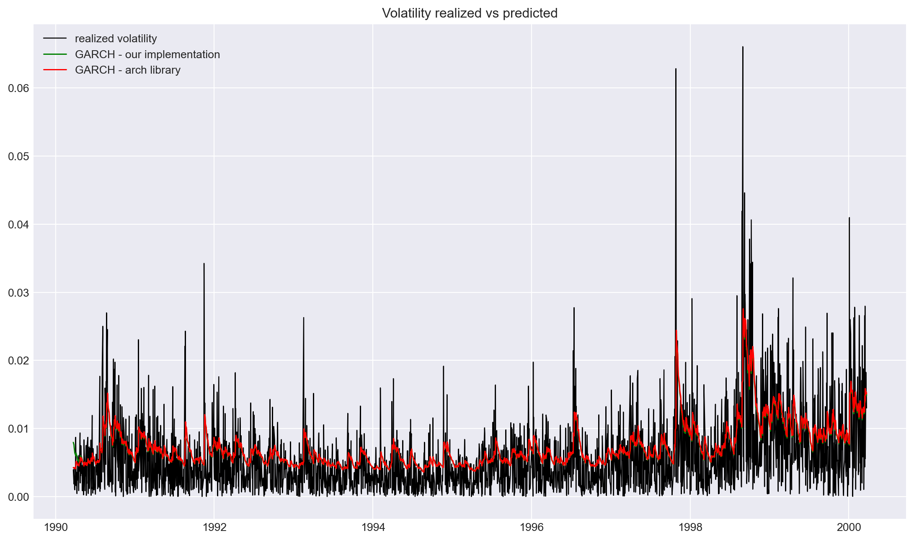
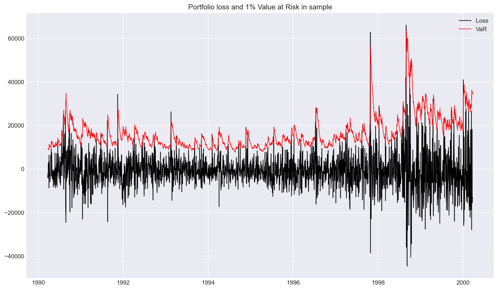
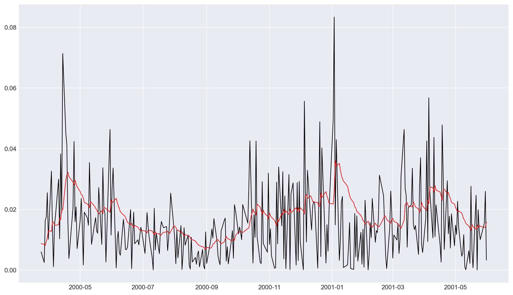
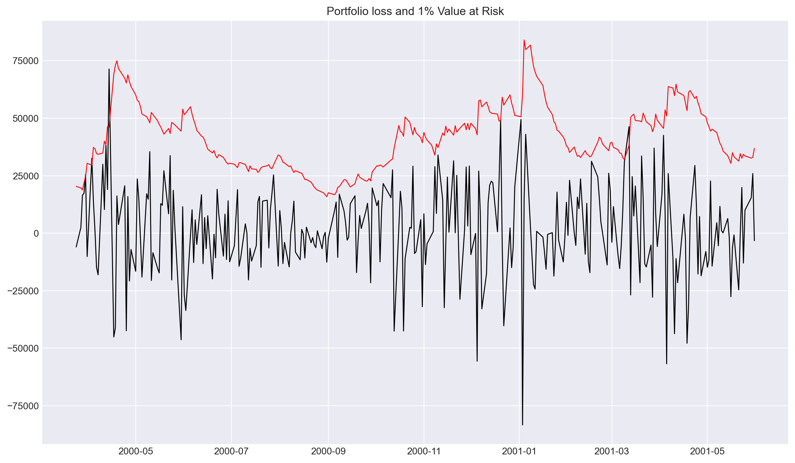
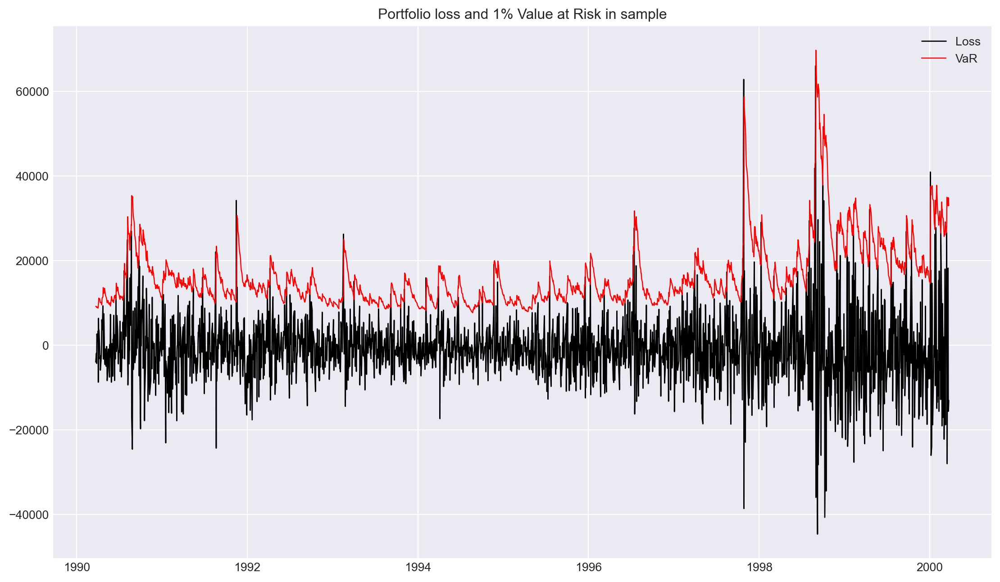
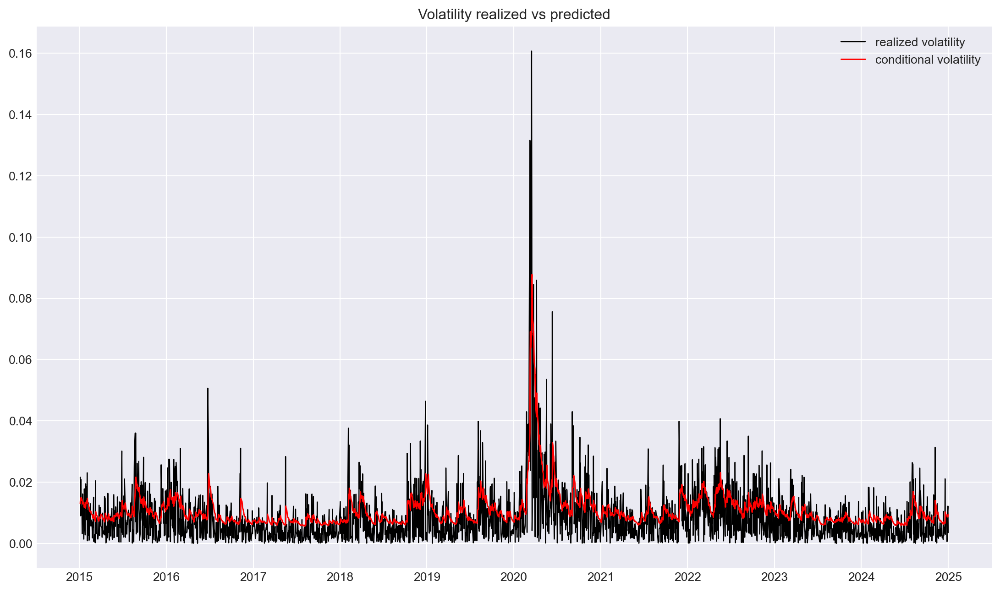
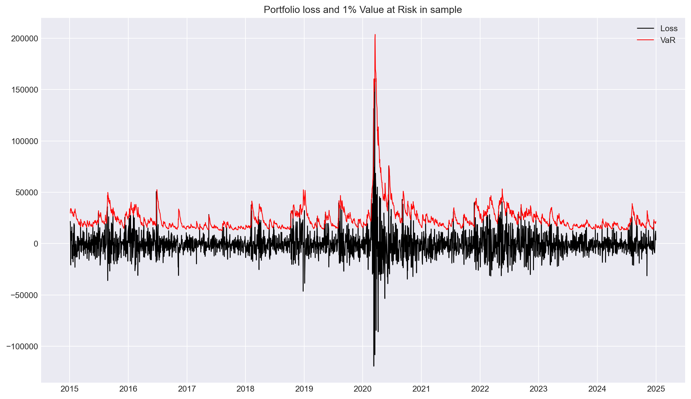

The main goal of this projectis to replicate the GARCH model analysis presented in Robert Engle’s 2001 Nobel Prize lecture, “GARCH 101: The Use of ARCH/GARCH Models in Applied Econometrics.” The lecture demonstrates how GARCH models can be used to analyze and forecast financial market volatility. However to make things more interesting we add some extensions to the study. First of all, we provide our own GARCH(1,1) implementation. We compare GARCH(1,1) results with some other volatility models, particularly E-GARCH and GJR-GARCH on the same data sample that was used in the original paper. Finally, we examine how market volatility has evolved since the publication of the paper.
Rationale behind the Study
From the initial inspection of the article, easy to obtain data
Well-known author so we asssumed that the methodology is sound and well-explained
The author’s research has had significant influence and impact in the field of time series analysis
Research could be easily extended for different datasets, portfolios and methods
Steps in the Research
The replication focuses on the following:
Constructing a portfolio similar (or, hopefully, identical) to the one used in Engle’s paper
Calculating and analyzing portfolio returns
Writing GARCH(1,1) implementation
Fitting a GARCH(1,1) model to the portfolio returns
Examining the model’s performance in capturing volatility clustering
Generating volatility forecasts in the same manner as Engle did
Extending study with other methods
Examining portfolio built on current data
By following Engle’s methodology, the project provides a practical implementation of GARCH modeling techniques for financial time series analysis.
Let’s use the GARCH(1,1) tools to estimate the 1 percent value at risk of a $1,000,000 portfolio on March 23, 2000. This portfolio consists of 50 percent Nasdaq, 30 percent DowJones and 20 percent long bonds. The long bond is a ten-year constant maturity Treasury. The portfolio has constant proportions of wealth in each asset that would entail some rebalancing over time.
Due to vagueness of the claim above, we’ll try to reverse engineer the portfolio, but it’s not a perfect solution. When we calculate return on the portfolio, we implictly assume daily rebalancing, i.e., weights are constant.
Fetching Stock Data
We’ll fetch the portfolio components data using the implemented function:
The function is implemented in src/utils.py
it uses yfinance - a Python package for downloading stock data from Yahoo Finance
start and end dates are taken from the article
weights for portfolio components are taken from the article, i.e. 50% Nasdaq, 30% Dow Jones, and 20% 10-year Treasury.
Code
# Parameters# Nasdaq, Dow Jones, and 10-year Treasurysymbols = ["^IXIC", "^DJI", "^TNX"] ## Define the date range, based on the paper# Sample periodstart_date = datetime(1990, 3, 22)end_date = datetime(2001, 6, 1)# Portfolio weights, taken from the articleweights = {"^IXIC": 0.50, # Nasdaq"^DJI": 0.30, # Dow Jones"^TNX": 0.20, # 10-year Treasury}# Fetch data using our implementationlogger.info("Fetching data...")prices = fetch_stock_data(symbols, start_date, end_date)# Display the first few rowsprices.tail()# Apparently, DJIA data is missing for 1990-1992, so we'll drop itprices = prices.drop(columns=["^DJI", "^TNX"])
YF.download() has changed argument auto_adjust default to True
RATE and Dow Jones Industrial Average (^DJI)
As the data for ^DJI was missing for 1990-1992, we had to take it from somewhere else. We found Dow Jones Industrial Average (^DJI) data here.
For RATE we used a good proxy which we found here looks like a good proxy for TNX, we’ll use data we found here
tnote_yield = pd.read_csv("./data/DGS10.csv", index_col="observation_date", parse_dates=True,)tnote_yield = tnote_yield.rename(columns={"DGS10": "^TNX"})# tnote yield is not exactly the price, but we merge it anywayprices = prices.join(tnote_yield["^TNX"])prices
^IXIC
^DJI
^TNX
Date
1990-03-22
434.500000
2695.72
8.53
1990-03-23
437.299988
2704.28
8.52
1990-03-26
438.799988
2707.66
8.51
1990-03-27
439.500000
2736.94
8.52
1990-03-28
436.700012
2743.69
8.51
...
...
...
...
2001-05-24
2282.020020
11122.42
5.52
2001-05-25
2251.030029
11005.37
5.52
2001-05-29
2175.540039
11039.14
5.54
2001-05-30
2084.500000
10872.64
5.54
2001-05-31
2110.489990
10911.94
5.43
2828 rows × 3 columns
Calculating Returns
This function uses log returns, which are calculated as follows:
\[r_t = \ln \left( \frac{P_t}{P_{t-1}} \right)\]
where \(P_t\) is the price at time \(t\).
Code
returns = calculate_returns(prices)portfolio_returns = pd.Series(0, index=returns.index, dtype=float)# Apply weights to each componentfor symbol, weight in weights.items():# Use pandas multiplication and addition portfolio_returns += returns[symbol] * weight# Add portfolio returns to the returns DataFramereturns["portfolio"] = portfolio_returns
We split the data and proceed with sample for period 1990-2000. In the original paper out of sample forecast has been produced, thus we need additional year of data to replicate this.
Let’s visualize prices (excl. portfolio) and returns for all data series and compare with the plot from the article.
Visual inspection of the plot below shows that the data is very similar to the one in the article. The only difference is ^TNX which doesn’t overlap perfectly with plots from the article (could be easily spotted by looking at the outliers.)
Possible explanation: The 10-year Treasury Constant Maturity Rate (^TNX) is a model-derived value rather than an actual market price. Since new 10-year Treasury bonds aren’t issued daily, the constant maturity yield represents a theoretical value of what a 10-year Treasury security would yield if issued at current market conditions. This value is calculated through interpolation of yields from Treasury securities with similar credit quality but different maturities. While this approximation closely tracks what an actual new 10-year bond would yield, small discrepancies can exist. Nevertheless, the constant maturity rate provides valuable insights into market expectations regarding inflation, economic growth, and future interest rates.
Hence, it’s likely that Engle’s methodology and / or selection of the securities with the same level of credit riskiness is different than the one used by Federal Reserve Bank of St. Louis in 2025.
The table above shows the summary statistics for our portfolio components and the overall portfolio. The statistics include mean returns, standard deviation, skewness, and kurtosis for each component.
Our results show minor differences compared to Table 1 in Engle (2001):
The statistics for Nasdaq (^IXIC) and Dow Jones (^DJI) differ by only 1-2 basis points
Larger discrepancies appear for the Rate component, likely because the article lacks specificity about the exact data source used
The most notable differences are in skewness (0.38 vs -0.20) and kurtosis (4.96 vs 5.96)
These differences in the Rate component are the primary reason for the slight variation between our replicated portfolio and the one presented in the paper
ACF of Squared Portfolio Returns
Article ACF of Squared Portfolio Returns (for reference)
Table 2: Autocorrelations of Squared Portfolio Returns
AC
Q-Stat
Prob
1
0.226
126.926
0.0
2
0.274
312.971
0.0
3
0.129
354.577
0.0
4
0.142
404.553
0.0
5
0.198
502.162
0.0
6
0.135
547.613
0.0
7
0.179
626.848
0.0
8
0.123
664.316
0.0
9
0.101
689.621
0.0
10
0.076
704.122
0.0
11
0.073
717.377
0.0
12
0.102
743.263
0.0
13
0.080
759.097
0.0
14
0.115
792.231
0.0
15
0.078
807.421
0.0
GARCH Model
ARCH models were first introduced by Engle in 1982 to model time-varying volatility in economic and financial time series. The idea was as follows - high squared residual at time \(t\) leads to increased conditional variance at time \(t+p\). We can write such ARCH(p) process: \[
\begin{cases}
r_t = \mu_t + \varepsilon_t \quad \varepsilon_t \sim \mathcal{N}(0, \sigma_t^2) \\
\sigma_t^2 = \omega + \alpha_1 \varepsilon_{t-1}^2 + \alpha_2 \varepsilon_{t-2}^2 + ... + \alpha_p \varepsilon_{t-p}^2
\end{cases}
\] However as shocks in time series often tend to be highly persistent, proper ARCH specification required quite big number of lags p.
This lead to obvious extension that includes past values of conditional variance. Such solution was proposed by Bollerslev in 1986 and is known as GARCH model. Interestingly Bollerslev was a student of Engle, who supervised his doctoral work.
GARCH(p,q) model is defined as follows: \[
\begin{cases}
r_t = \mu_t + \varepsilon_t, \quad \varepsilon_t \sim \mathcal{N}(0, \sigma_t^2) \\
\sigma_t^2 = \omega + \sum_{i=1}^p \alpha_i \varepsilon_{t-i}^2 + \sum_{j=1}^q \beta_j \sigma_{t-j}^2
\end{cases}
\] We estimate model parameters using maximum likelihood estimator. Assuming conditional normality we define likelihood function as follows: \[
L(\theta) = \prod_{t=1}^T \frac{1}{\sqrt{2\pi \sigma_t^2}} \exp\left( -\frac{(r_t - \mu_t)^2}{2 \sigma_t^2} \right)
\]
Above we have made our own implementation of GARCH(1,1) model. However there are already existing implementations. We will proceed with the study using arch_model from arch library.
Article GARCH(1,1) Model (for reference)
GARCH(1,1) Model
We use arch library to fit GARCH(1, 1) model. However fitting the model to our returns in the original scale produces warning with recommendation to scale the returns by multiplying them by 1000. Therefore we fit the model to scaled returns. Here we have to remember that forecasted conditional volatility obtained from the resulting object will be scaled as well. For visuals we will rescale back to the original scale.
Code
logger.info("Fitting GARCH(1,1) model...")results = fit_garch(returns["portfolio"]*1000, vol="Garch", dist="normal")#logger.info(results.summary())# Extract coefficients, standard errors, z-statistics, and p-valuescoef = results.paramsstd_err = results.std_errz_stat = coef / std_errp_values = results.pvalues# Create a DataFrame to display the resultsmodel_results = pd.DataFrame( {"Coef": coef,"St. Err": std_err,"Z-Stat": z_stat,"P-Value": p_values, })model_results
Table 3: GARCH(1,1)
Coef
St. Err
Z-Stat
P-Value
mu
0.596852
0.128569
4.642269
3.446031e-06
omega
1.109939
0.590824
1.878630
6.029507e-02
alpha[1]
0.103035
0.037960
2.714297
6.641656e-03
beta[1]
0.882438
0.041933
21.044055
2.592334e-98
ACF of Squared Standardized Residuals
The same as before we generate series of autocorrelations up to 15th lag together with Q-stats and their p-values. Results are pretty similar to those presented in the original paper. Note that here standardized residuals are basically returns adjusted for GARCH effects as mean portfolio return is very close to 0. This way we can interpret the results by saying that GARCH(1, 1) model manages to capture portfolio returns variance variability.
Article ACF of Squared Standardized Residuals (for reference)
Visual below shows conditional volatility and realized volatility defined as square root of squared returns assuming 0 mean: \[
\text{Var}(r_t) = \mathbb{E}[(r_t - \mu)^2]
\] if \(\mu = 0\) we get: \[
\text{Var}(r_t) = \mathbb{E}[r_t^2]
\]
Code
# Plot volatilityplt.figure(figsize = (14, 8))plt.plot(np.sqrt(returns['portfolio']**2), color ='black', lw =0.9)plt.plot(results.conditional_volatility/1000, color ='red', lw =1.1)plt.title("Volatility realized vs predicted")plt.show()
Figure 4: Volatility Forecast
At this point we can also compare results from our implementation with those obtained using arch library implementation
Code
plt.figure(figsize = (14, 8))plt.plot(np.sqrt(returns['portfolio']**2), color ='black', lw =0.9, label ='realized volatility')plt.plot(r.index, np.sqrt(sigma2/1000000), color ='green', lw =1.1, label ='GARCH - our implementation')plt.plot(results.conditional_volatility/1000, color ='red', lw =1.1, label ='GARCH - arch library')plt.title("Volatility realized vs predicted")plt.legend()plt.show()

Green line can barely be seen. GARCH parameters we got from our implementations are almost the same as those obtained from arch_model library implementation. Therefore forecasted conditional volatility also has to be nearly identical.
Value at Risk
Based on conditional volatility we calculate 1% value at risk. We assume initial portfolio value of 1 000 000$. We predict that 1 step ahead standard deviation will be 0.014772.
First we assume normal distribution of returns. We obtain 1% quantile by multiplying predicted standard deviation by 2.327.
The 1% Value at Risk asusming normal distribution of standardized residuals is 5786$. Note that as mean return is very close to 0 we can omit this value in our calculation. We basically calculated the 99% quantile, but with 0 mean it is symmetrical.
Results we obtained are pretty similar to those presented in the original paper. Interestingly, even empirical 1st quantile is very close to -2.844, which is the original result.
We also plot 1% value at risk for the whole in sample period. For reference we show the same plot from the original study.
in-sample-VaR
Code
# Calculate VaRVaR_returns = calculate_VaR_returns(returns["portfolio"], results.conditional_volatility/1000, 2.327)# Value at risk - portfolio value 1 000 000$ at each point in timeinit_value =10**6portfolio_returns = returns['portfolio']*init_valueportfolio_VaR = VaR_returns*init_valueplt.figure(figsize = (14, 8))plt.plot(-portfolio_returns, color ='black', lw =1, label='Loss')plt.plot(-portfolio_VaR, color ='red', lw =0.9, label='VaR')plt.title("Portfolio loss and 1% Value at Risk in sample")plt.legend()plt.show()

Figure 5: Portfolio loss in sample
We show also the number of exceedances. Good model should produce such VaR estimates that actual portfolio loss is greater than the estimated around 1% of time. We see that for our GARCH(1, 1) VaR estimates assuming normal distribution of standardized residuals is 1.49%.
Code
# Exceedancesn_exc, perc_exc = count_exceedances(VaR_returns, returns["portfolio"], True)print(f"Number of exceedances: {n_exc}")print(f"Percentge of exceedances: {perc_exc*100:.2f}%")
Number of exceedances: 51
Percentge of exceedances: 2.06%
Out-of-sample model fit and Value at Risk
We obtain oit of sample predictions using rolling forecast without reestimating GARCH parameters
oos-VaR
Code
# Rolling forecast without reestimating parametersmu = results.params['mu']omega = results.params['omega']alpha = results.params['alpha[1]']beta = results.params['beta[1]']epsilon2 = (returns_oos['portfolio']*1000- mu)**2sigma2 = np.zeros(len(returns_oos))sigma2[0] = omega/(1- alpha - beta)for t inrange(1, len(sigma2)): sigma2[t] = omega + alpha*epsilon2[t-1] + beta*sigma2[t-1]plt.figure(figsize = (14, 8))plt.plot(np.sqrt(returns_oos['portfolio']**2), color ='black', lw =1)plt.plot(returns_oos.index, np.sqrt(sigma2)/1000, color ='red', lw =0.9)plt.show()

Code
# Value at risk - portfolio value 1 000 000$ at each point in timeportfolio_returns = returns_oos['portfolio']*(10**6)plt.figure(figsize = (14, 8))plt.plot(-portfolio_returns, color ='black', lw =1)plt.plot(returns_oos.index, np.sqrt(sigma2) *2.327*10**3, color ='red', lw =0.9)plt.title("Portfolio loss and 1% Value at Risk")plt.show()

Code
n_exc, perc_exc = count_exceedances(np.sqrt(sigma2) * (-2.327)/1000, returns_oos['portfolio'].values, True)print(f"Number of exceedances: {n_exc}")print(f"Percentge of exceedances: {perc_exc*100:.2f}%")
Number of exceedances: 4
Percentge of exceedances: 1.35%
Extensions
Alternative Error Distributions
Code
import arch# 6.1 Estimate GARCH(1,1) with four innovation distributionsdistros = {"Normal" : "normal","Student-t": "t","Skew-t" : "skewt","GED" : "ged",}alt_models = {}for name, dist in distros.items(): logger.info(f"Fitting GARCH(1,1) with {name} errors …") am = arch.arch_model( returns["portfolio"] *1000, vol="GARCH", p=1, q=1, dist=dist, rescale=False, ) res = am.fit(disp="off") alt_models[name] = res
Code
# 6.2 Information-criterion comparison tablecomp = pd.DataFrame( {"Distribution": list(alt_models.keys()),"LogLik" : [m.loglikelihood for m in alt_models.values()],"AIC" : [m.aic for m in alt_models.values()],"BIC" : [m.bic for m in alt_models.values()], }).sort_values("AIC")logger.info("\nError-Distribution Comparison:\n%s", comp.to_string(index=False))
Code
# 6.3 Overlay conditional-volatility pathsimport matplotlib.pyplot as pltimport numpy as npfig, ax = plt.subplots(figsize=(10, 6))for name, res in alt_models.items(): ax.plot( res.conditional_volatility.index, np.sqrt(res.conditional_volatility), label=name, linewidth=1, )ax.set_title("Conditional Volatility – Alternative Error Distributions")ax.set_xlabel("Date")ax.set_ylabel("Volatility")ax.legend(frameon=False)fig.tight_layout()plt.show()
results_egarch = fit_garch(returns["portfolio"]*1000, vol="egarch", dist="normal")# Extract coefficients, standard errors, z-statistics, and p-valuescoef = results_egarch.paramsstd_err = results_egarch.std_errz_stat = coef / std_errp_values = results_egarch.pvalues# Create a DataFrame to display the resultsmodel_results = pd.DataFrame( {"Coef": coef,"St. Err": std_err,"Z-Stat": z_stat,"P-Value": p_values, })model_results
Coef
St. Err
Z-Stat
P-Value
mu
0.617429
0.131582
4.692350
0.000003
omega
0.087417
0.045542
1.919497
0.054921
alpha[1]
0.209258
0.062087
3.370424
0.000751
beta[1]
0.979960
0.010973
89.310450
0.000000
Code
VaR_returns = calculate_VaR_returns(returns["portfolio"], results_egarch.conditional_volatility/1000, 2.327)# Value at risk - portfolio value 1 000 000$ at each point in timeinit_value =10**6portfolio_returns = returns['portfolio']*init_valueportfolio_VaR = VaR_returns*init_valueplt.figure(figsize = (14, 8))plt.plot(-portfolio_returns, color ='black', lw =1, label='Loss')plt.plot(-portfolio_VaR, color ='red', lw =0.9, label='VaR')plt.title("Portfolio loss and 1% Value at Risk in sample")plt.legend()plt.show()
Code
# Exceedancesn_exc, perc_exc = count_exceedances(VaR_returns, returns["portfolio"], True)print(f"Number of exceedances: {n_exc}")print(f"Percentge of exceedances: {perc_exc*100:.2f}%")
Number of exceedances: 50
Percentge of exceedances: 2.02%
GJR-GARCH
Code
results_gjrgarch = fit_garch(returns["portfolio"]*1000, o=1, dist="normal")# Extract coefficients, standard errors, z-statistics, and p-valuescoef = results_gjrgarch.paramsstd_err = results_gjrgarch.std_errz_stat = coef / std_errp_values = results_gjrgarch.pvalues# Create a DataFrame to display the resultsmodel_results = pd.DataFrame( {"Coef": coef,"St. Err": std_err,"Z-Stat": z_stat,"P-Value": p_values, })model_results
mu omega alpha[1] beta[1] gamma[1]
garch 0.5969 1.1099 0.1030 0.8824 NaN
e-garch 0.6174 0.0874 0.2093 0.9800 NaN
gjr-garch 0.4609 1.0923 0.0555 0.8888 0.078
Code
VaR_returns = calculate_VaR_returns(returns["portfolio"], results_gjrgarch.conditional_volatility/1000, 2.327)# Value at risk - portfolio value 1 000 000$ at each point in timeinit_value =10**6portfolio_returns = returns['portfolio']*init_valueportfolio_VaR = VaR_returns*init_valueplt.figure(figsize = (14, 8))plt.plot(-portfolio_returns, color ='black', lw =1, label='Loss')plt.plot(-portfolio_VaR, color ='red', lw =0.9, label='VaR')plt.title("Portfolio loss and 1% Value at Risk in sample")plt.legend()plt.show()

Code
# Exceedancesn_exc, perc_exc = count_exceedances(VaR_returns, returns["portfolio"], True)print(f"Number of exceedances: {n_exc}")print(f"Percentge of exceedances: {perc_exc*100:.2f}%")
Number of exceedances: 53
Percentge of exceedances: 2.14%
plt.figure(figsize = (14, 8))plt.plot(np.sqrt(returns_new['portfolio']**2), color ='black', lw =0.9, label ='realized volatility')plt.plot(garch_new.conditional_volatility/1000, color ='red', lw =1.1, label ='conditional volatility')plt.title("Volatility realized vs predicted")plt.legend()plt.show()

Code
# Value at risk - portfolio value 1 000 000$ at each point in timeVaR_returns = calculate_VaR_returns(returns_new["portfolio"], garch_new.conditional_volatility/1000, 2.327)init_value =10**6portfolio_returns = returns_new['portfolio']*init_valueportfolio_VaR = VaR_returns*init_valueplt.figure(figsize = (14, 8))plt.plot(-portfolio_returns, color ='black', lw =1, label='Loss')plt.plot(-portfolio_VaR, color ='red', lw =0.9, label='VaR')plt.title("Portfolio loss and 1% Value at Risk in sample")plt.legend()plt.show()

Code
n_exc, perc_exc = count_exceedances(VaR_returns, returns_new["portfolio"], True)print(f"Number of exceedances: {n_exc}")print(f"Percentge of exceedances: {perc_exc*100:.2f}%")
Number of exceedances: 52
Percentge of exceedances: 2.07%
Conclusion
Engle, R. F. (2001). GARCH 101: The Use of ARCH/GARCH Models in Applied Econometrics. Journal of Economic Perspectives, 15(4), 157-168.
Kaggle. (2023). Dow Jones Industrial Average (^DJI) Data. [Dataset]. Available at: https://www.kaggle.com/datasets/shiveshprakash/34-year-daily-stock-data
St. Louis Fed. (2023). 10-Year Treasury Constant Maturity Rate [^TNX]. [Dataset]. Available at: https://fred.stlouisfed.org/graph/fredgraph.csv?bgcolor=%23ebf3fb&chart_type=line&drp=0&fo=open%20sans&graph_bgcolor=%23ffffff&height=450&mode=fred&recession_bars=on&txtcolor=%23444444&ts=12&tts=12&width=1320&nt=0&thu=0&trc=0&show_legend=yes&show_axis_titles=yes&show_tooltip=yes&id=DGS10&scale=left&cosd=2020-04-17&coed=2025-04-17&line_color=%230073e6&link_values=false&line_style=solid&mark_type=none&mw=3&lw=3&ost=-99999&oet=99999&mma=0&fml=a&fq=Daily&fam=avg&fgst=liin&fgsnd=2020-02-01&line_index=1&transformation=lin&vintage_date=2025-04-22&revision_date=2025-04-22&nd=1962-01-02
Yahoo Finance. (2023). [Dataset]. Available at: https://finance.yahoo.com/quote/%5EIXIC/history?period1=631152000&period2=1713878400&interval=1d&filter=history&frequency=1d&includeAdjustedClose=true
GenAI used for proof checking and type hinting
Footnotes
Potentially ^TNX, this needs to be checked further on.↩︎